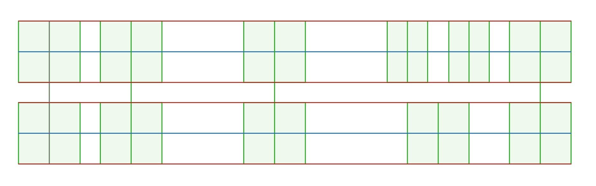

An alphabetic syllabary orthography for Lojban
Drelu'u (spelled Dreluhu when an apostrophe is unavailable) has a full alphabet, with each letter representing a different sound. Hangul served as inspiration in how the alphabet shapes were assigned, keeping ㅁ as {my}, ㄹ as {ly}, ㅇ as a placeholder for vowels (denpa bu), and the rest were (like Hangul) determined based on the shapes associated with the sounds and how they're made. All letters are designed to be fit into a square (1:1), but each also has a skinnier (5:7 or 3:5) version - {iy}, {uy}, and {yhy} aren't used in this form, though.
All of the voiced consonants open up or to the right, and their unvoiced pairs, down or to the left. The labial sounds have an empty space between two lines, indicating the involvement of the lips. The alveolar/postalveolar characters involve a horizontal line crossing through the shape to represent the tongue's role in the sound. The velar sounds have two lines coming to a point to indicate the contact the tongue makes with the soft palate.
The closed mouth of the nasal sounds is represented by the closed shape of the characters. If air is moving horizontally along the line of characters, the plosive sounds have some sort of vertical line to capture the air completely, and the fricative only obstruct the air in some way. The shape of the tongue during the approximant {ly} sound is then represented with ㄹ, like Hangul, and is unrotatable. The only rhotic sound is given an "x" shape due to relation to the vowel sounds, and the acceptable {ry} sounds' span over various places of articulation.
{cy}, {jy}, and {xy} are a bit stylized in the fonts on this page, but valid shapes include triangles, A-shapes, and the Hangul J: ∧, △, ▽, ∀, A, ㅈ, ㅊ. As long as the horizontal line exists in {cy} and {jy}, it can be anywhere vertically.
It should be noted that the {ly} and {yhy} characters are only given one orientation due to the ability to easily confuse the rotated/flipped versions. Lots of attention has been given to the design of the characters and the ability to distinguish them from each other at small font sizes. 11pt/px is the theoretical minimum size for Drelu'u fonts, when considering the spacing between the characters and character features, where the skinnier shapes are 3x5 pixels in size.
| Labial | Alveolar | Postalveolar | Velar | Glottal | |
|---|---|---|---|---|---|
| Nasal | my |
ny |
|||
| Plosive | py / by |
ty / dy |
ky / gy |
denpa bu |
|
| Fricative | fy / vy |
sy / zy |
cy / jy |
xy |
yhy |
| Approximant | ly |
||||
| Rhotic | ry |
||||
It's useful to imagine the standard IPA vowel diagram occupying the space of a square intersected by a centered cross - if that is split-up evenly into nine pieces, each vowel sound is then represented by the shape in its ninth. Not all are used, but this helps give each a defining characteristic, and allows for L and ⅃ to be valid shapes for {ebu} and {obu}, respectively.
If you can remember the table below, or the front-to-back, close-to-open nature of the IPA vowel chart, you should be able to easily identify any vowel (including the diphthongs). The vowel shapes are often vertically compressed in CV and CCV arrangements, to help distinguish them from consonants. For example, {abu}'s vertical bar is often shortened and the horizontal bar is raised to the mid-line.
| Front | Central | Back | |
|---|---|---|---|
| Close | ibu |
ubu |
|
| Mid | ebu |
ybu |
obu |
| Open | abu |
||
{aibu} and {aubu} are simply the combined shapes of {abu} and {ubu}/{ibu}. {eibu} and {oibu} take their initial vowel shape and add a horizontal line to represent the {ibu}. Valid shapes include the Hangul vowels ㅑ and ㅕ (albeit representing very different sounds), as if you were combining their closed counterpart to the bottom of the shape. This doesn't make complete sense for {oibu} (looking like an o-u diphthong), but is done to prevent overly-complicated shapes. {eibu} and {oibu} need an ascending or descending (show in the fonts here) line, or both (as in ㅑ and ㅕ).
aibu |
aubu |
eibu |
oibu |
Semivowels take the {ibu} and {ubu} shapes from the sounds that they're derived from and add a vertical or diagonal line to them to represent the palatal or labial on-glide. In all cases, they're treated as consonants. These shapes are different from their related vowels to show that they represent different sounds - something the Latin orthography lacks.
iy |
uy |
The alphabet of Drelu'u is arranged into syllables of CV, CVC, or CCV letter stacks, similar to Hangul. Each stack type only has one arrangement, which aids in quickly identifying what it'll sound like, and all three can be seen in the example below. Both letters in a CV stack are full-sized. The skinnier version (5:7 in the fonts here) of each letter is used for the first two letters of CCV and CVC, and are placed side-by-side, while the bottom letter remains full-sized and centered under the two. It's also valid for a wide version of the bottom letter to exist/be used here, but the spacing on either side may help to identify the final letter more easily, and prevent confusion with another version of the letter - keeping the same proportions of the letter makes it more recognisable.
CCV forms are only valid when the two consonants are a valid initial consonant pair in Lojban. Any words that contain a consonant triplet should be able to be separated into two syllables, like CVC-CCV. Below are some examples of CCV syllables and more complex syllable separation.
The {denpa bu} is treated just like a consonant, and is required when writing words that start with a vowel, and can be combined into CVC shapes like in {la .alvin.}. The final {denpa bu} is preferred to be omitted in the Drelu'u text, as it could be inferred as another syllable.
Initial letters in the same word should all be spaced evenly, both horizontally with the previous/next syllables, and vertically with their lower counterparts. Because of this, standard Latin spaces can be used without causing confusion about where a word ends/begins. In general, no kerning or ligating is done between the initial letters of a CCV or CVC stack, but is acceptable provided all cases are accounted for. It may be possible to combine consonants so that they can be fitted to a square, but should be done with caution, especially with pairs {sy_ty} and {sy_ny}, as the vertical line of {sy} could be confused for the left side of {ny}.
You can enable the visual grid to display behind all of the examples via the checkbox at the top of this page, and below is an example of the spacing for a phase in the form of CVCV CV CVCCV - the lines of the characters should be drawn on these lines, not inside the boxes. The line height of Drelu'u should be at least 107.5% to prevent characters interfering with each other - 115% may be ideal.
Aside from the normal syllable-stacking, there are other ways of writing the alphabet: an alphabet mode, which places the characters one-after-another horizontally, like Latin orthography, and a vertical mode, which does the same thing, but arranges them vertically. More complicated vertical arrangements are possible, but aren't implemented in the font at this time.
Below is a transcript of la melbi e le ractu, which you can convert to the two alternate modes using these checkboxes. The non-Lojban punctuation has been removed for this demo, but is still valid to be used with Drelu'u.